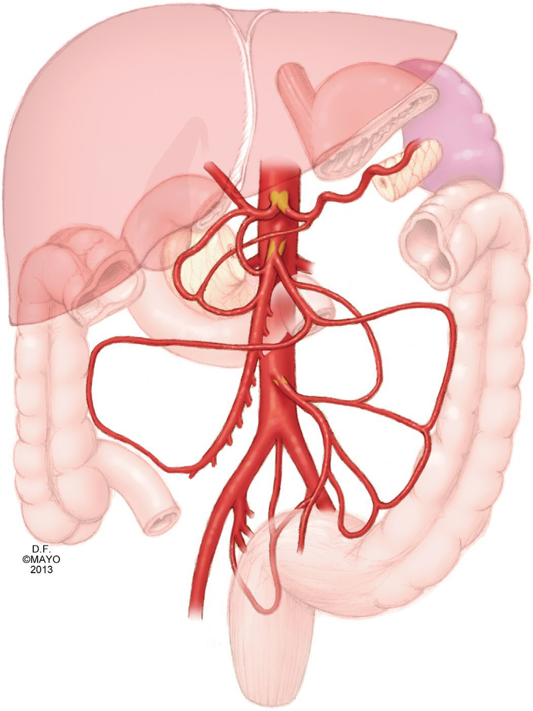
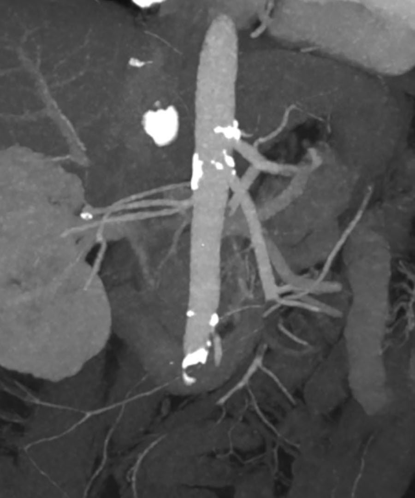
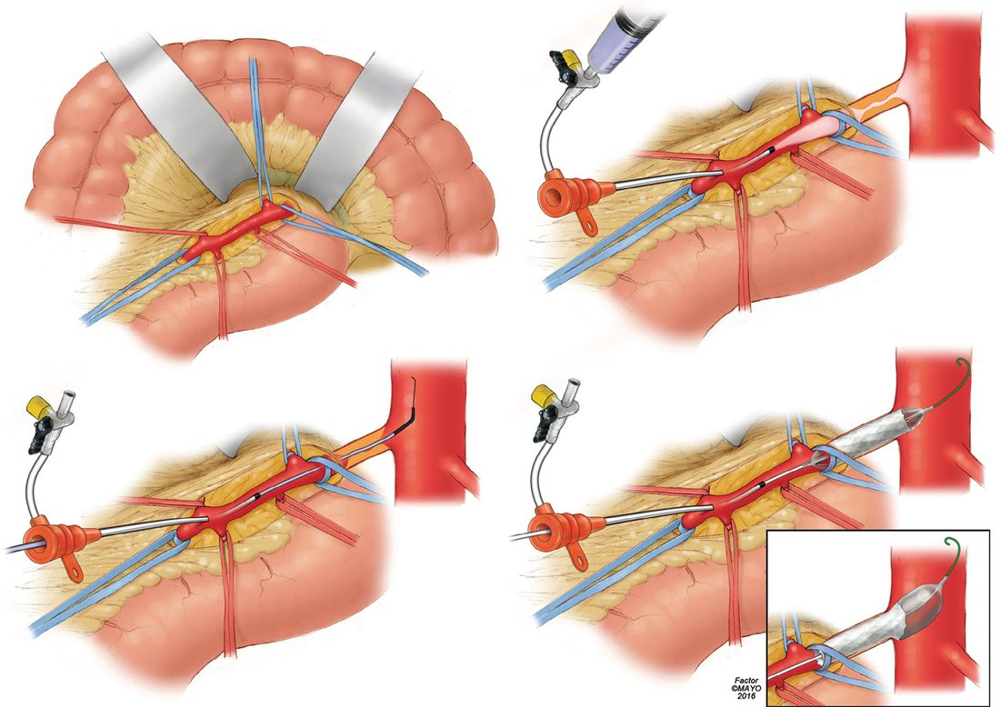

Mesenteric Ischaemia
Summary
- Mesenteric ischaemia is an imbalance between intestinal blood supply and demand, and it presents in two quite different ways: an acute emergency threatening the whole midgut, and a chronic syndrome of postprandial pain and weight loss [1].
- Acute mesenteric ischaemia accounts for fewer than 1 per 100,000 hospital admissions and under 2% of admissions for gastrointestinal disorders, but overall mortality is around 60% [1][2].
- The superior mesenteric artery is usually the vessel involved, and the diagnosis turns on a single clinical observation (pain out of proportion to the abdominal findings) supported by CT angiography [1][2].
- Unless quickly reversed, occlusion leads to ischaemia and necrosis of most of the intestine [3].
Definition
Arterial inflow to the mesenteric domain is limited to three major vessels (the coeliac trunk and the superior and inferior mesenteric arteries) with additional pelvic inflow from the middle rectal arteries, so narrowing or occlusion at the origin of any one vessel can have significant clinical effect [3].
Acute mesenteric ischaemia (AMI) is the final common pathway of several distinct processes: mesenteric arterial embolism, arterial thrombosis, mesenteric venous thrombosis, and non-occlusive mesenteric ischaemia [1]. Chronic mesenteric ischaemia (CMI) is a rare condition caused by an imbalance between blood supply and physiological demand, producing postprandial abdominal pain, food fear and weight loss [1]. Atherosclerotic narrowing of the mesenteric vessels is separately termed mesenteric artery occlusive disease, and is estimated to affect up to 10% of the elderly population, only a small proportion of whom develop symptomatic CMI, because collateral supply is extensive [1].
Epidemiology in Schwartz's account
Mesenteric occlusive disease, recognised since 1936, presents mostly after 60, is three times commoner in women, accounts for only 2% of revascularisations for atheroma and about 1 in 1000 hospital admissions (rising with awareness and an ageing population), and carries 50–75% mortality chiefly through delay; atherosclerosis is the cause in the great majority (splanchnic atheroma is found at autopsy in 35–70%), with fibromuscular dysplasia, polyarteritis nodosa, arteritis and median arcuate ligament compression together about one-ninth as frequent; symptoms usually need two of the three visceral trunks stenosed or occluded, but a single vessel suffices in up to 9% (SMA 5%, coeliac 4%) [4].
Pathophysiology
Collateral pathways
- Robust collaterals exist to maintain mesenteric perfusion.
- The arc of Riolan connects the left colic artery, a branch of the inferior mesenteric artery, with the middle colic artery from the superior mesenteric artery; the pancreaticoduodenal arcade, or arc of Bühler, together with the gastroduodenal arteries, connects the coeliac axis to the superior mesenteric artery [1].
- Anastomoses between the peripheral branches of the superior and inferior mesenteric arteries form the marginal artery of Drummond, which is why the inferior mesenteric artery can usually be divided at open repair of an abdominal aortic aneurysm [3].
The extent of this collateral network explains both why most patients with mesenteric atherosclerosis never become symptomatic, and why acute-on-chronic presentations are delayed: pre-existing collaterals maintain perfusion until a small embolus or an episode of hypotension occludes an already stenosed vessel [1].

Schwartz names the pancreaticoduodenal arcades between coeliac and SMA, the marginal artery of Drummond, arc of Riolan and unnamed "meandering mesenteric arteries" between SMA and IMA, and hypogastric and haemorrhoidal collaterals to the hindgut; because coeliac and SMA arise ventrally from the suprarenal aorta and the IMA from the left lateral infrarenal aorta, both anteroposterior and lateral aortic projections are needed to see the proximal lesions [4].
Flow and postprandial demand
- Under fasting conditions approximately 20% to 25% of cardiac output reaches the mesenteric circulation, rising to nearly 35% to 40% after a meal [1].
- This postprandial hyperaemia is a physiological vasodilatory response whose magnitude and duration depend on meal composition: compared with carbohydrate, lipid and protein produce a greater response, 25% to 200% higher and lasting 3 to 7 hours [1].
- It is this demand that a stenosed circulation cannot meet, which is why the pain of chronic mesenteric ischaemia is postprandial.
Schwartz adds that splanchnic flow is set by hormonal vasodilators (nitric oxide, glucagon, vasoactive intestinal peptide), intrinsic vasoconstrictors such as vasopressin and autonomic innervation; postprandial mid-abdominal pain reflects diversion of SMA flow to the stomach, producing transient anaerobic metabolism and acidosis, and persistent ischaemia breaches the mucosa, admits luminal toxins and ends in full-thickness necrosis and perforation [4].
The four mechanisms
- Embolism accounts for about 50% and is the most common type, usually arising from the heart [2].
- The embolus most commonly lodges 2 to 10 cm distal to the origin of the superior mesenteric artery, typically beyond the first jejunal branch, so proximal jejunal sparing is characteristic, unlike thrombosis, which occurs at the vessel origin [2].
- An embolus lodging proximal to the middle colic artery produces a classic pattern of ischaemia that spares the segments that vessel supplies [1].
- Mortality for untreated thromboembolic events to the superior mesenteric artery averages 54% [1].
Thrombosis is the second most common cause, at 20% to 35%, and usually occurs in situ on a pre-existing chronic atherosclerotic lesion, so most such patients have a history of chronic mesenteric ischaemia [1]. In patients with peripheral vascular disease the incidence of acute mesenteric ischaemia may be as high as 27% [1].
Non-occlusive mesenteric ischaemia accounts for about 15% and arises from a low cardiac output state [2]. Those at risk are the critically ill and patients in shock from another cause, with postoperative cardiac surgery and haemodialysis patients at highest risk [1].
Mesenteric venous thrombosis accounts for 5% to 15% of mesenteric ischaemic events and is a disorder of coagulation impairing venous return from the intestine [1][2]. It most commonly affects the superior mesenteric vein; involvement of the inferior mesenteric vein is rare, under 5% to 10% of cases [1].
Schwartz's small-bowel chapter quantifies them: embolus causes over 50% of acute cases, up to 95% with documented cardiac disease, half lodging in the SMA at branch points beyond the middle colic origin; thrombosis sits on proximal atheroma at the origins; NOMI is vasospasm in critically ill patients on vasopressors; venous thrombosis is 5–15% of cases, involving the SMV in 95% and the IMV rarely, primary when idiopathic and secondary with heritable or acquired coagulopathy, and a chronic form can involve portal or splenic veins causing varices, splenomegaly and hypersplenism; mucosal sloughing begins within 3 hours and full-thickness infarction by 6 hours [5]. Rarer causes are IMA ligation at aortic surgery without collaterals, aortic dissection involving the mesenteric vessels, coarctation repair, mesenteric or radiation arteritis and cholesterol emboli [4].
Clinical features
- The cardinal sign is pain out of proportion to the examination.
- Pain is usually of sudden onset, while haematochezia and peritoneal signs are late findings, followed by sepsis and acidosis [2].
- Embolic occlusion produces sudden severe abdominal pain with bowel emptying (vomiting and diarrhoea) in a patient with a source of emboli, usually cardiac [6].
- At first the severity of pain does not match the findings on examination; once ischaemia and necrosis develop, the patient develops peritonism from irritation of the parietal peritoneum by necrotic intestine [3].
The history often supplies the mechanism: atrial fibrillation, endocarditis, recent myocardial infarction or recent angiography point to embolism [2].
Chronic mesenteric ischaemia presents with postprandial abdominal pain, which leads to food fear, and consequent weight loss [1].
Presentation by mechanism in Schwartz's account
Acute ischaemia gives colicky mid-abdominal pain out of proportion to tenderness with nausea, vomiting and often bloody diarrhoea from mucosal sloughing, in a patient with cardiac or atherosclerotic disease, physical signs being absent early and distension, peritonitis, rebound and rigidity marking infarction; chronic ischaemia gives postprandial pain, food fear and weight loss with persistent nausea and occasional diarrhoea, patients typically enduring a long and expensive gastrointestinal work-up for suspected malignancy before referral; NOMI affects the elderly with heart failure, cardiogenic, hypovolaemic or haemorrhagic shock, sepsis, pancreatitis, digitalis or adrenaline, pain being present in only about 70% so progressive distension with acidosis may be the first sign; coeliac compression by the median arcuate ligament affects mainly women of 20–40 with nonspecific upper abdominal pain that may be meal-related, angiography showing compression accentuated by deep expiration with post-stenotic dilatation; chronic venous thrombosis is usually an incidental finding thanks to venous collaterals but may present with variceal bleeding [4][5].
Aetiology
Incidence of acute mesenteric ischaemia rises with age and nearly doubles with each 5-year interval above the age of 70; it is typically seen in patients with multiple comorbidities and is threefold more common in women [1]. Risk factors are those for thrombosis or embolus, atherosclerosis, atrial fibrillation or flutter, recent myocardial infarction, congestive heart failure, or a history of chronic mesenteric ischaemia [1].
Chronic mesenteric ischaemia is most commonly caused by atherosclerosis producing haemodynamically significant stenosis or occlusion of the coeliac axis, superior mesenteric artery or inferior mesenteric artery; it affects patients in their sixth and seventh decades and is three times more common in women [1].
Secondary causes account for more than 90% of mesenteric venous thrombosis and fall into three groups [1]:
| Group | Examples |
|---|---|
| Direct injury | Abdominal trauma, postsurgical insult, intra-abdominal inflammatory states such as pancreatitis and inflammatory bowel disease |
| Venous congestion or stasis | Portal hypertension and cirrhosis, congestive heart failure, hypersplenism, obesity, abdominal compartment syndrome |
| Thrombophilia | Protein C or S deficiency, antithrombin III deficiency, activated protein C resistance, JAK2 V617F mutation, neoplasm, oral contraceptives, polycythaemia vera, essential thrombocytosis, heparin-induced thrombocytopenia, antiphospholipid syndrome, cytomegalovirus infection |
Table reformats the categories of secondary mesenteric venous thrombosis [1]. Primary mesenteric venous thrombosis occurs without an underlying trigger and is considered idiopathic [1].
Spontaneous isolated mesenteric artery dissection is rare, with a reported incidence around 0.06%, most often involving the superior mesenteric artery; it is commoner in men of Korean, Japanese and Chinese descent, suggesting genetic predisposition [1]. The dissection typically occurs 1 to 3 cm from the ostium, where shear stress is high as the vessel turns from a fixed retropancreatic position into the mobile mesenteric root, and hypertension is not clearly a risk factor [1].
Diagnosis
- Initial laboratory values can be normal, but may show leucocytosis above 15,000 with a neutrophilic left shift, metabolic acidosis and a raised lactate [1].
- D-dimer is an early sensitive marker but is not specific and has a high false-positive rate; raised amylase, creatine kinase and aminotransferases may occur but lack sensitivity and specificity [1].
- Intestinal fatty acid-binding proteins are under study as earlier markers but are not in routine use [1]. No laboratory test confirms or excludes the diagnosis.
- CT angiography is the single best imaging modality, with a sensitivity of 93% and specificity of 96%; its wide availability has displaced diagnostic angiography as the gold standard [1].
- Findings that suggest intestinal ischaemia are vascular occlusion, bowel wall thickening, intramural gas and portal venous gas [2].
- Duplex ultrasound can identify high-grade stenoses of the superior mesenteric and coeliac arteries in chronic disease, but is not reliable acutely because it cannot assess the visceral vessels beyond their origins or detect signs of intestinal ischaemia [1].
- Magnetic resonance angiography has high diagnostic accuracy but is less available and slower, making it less suitable in the acute setting [1].

Laboratory, radiological and angiographic findings in Schwartz's account
- The differential is perforation, obstruction, pancreatitis, cholecystitis and renal colic; laboratory tests are neither sensitive nor specific, haemoconcentration, leukocytosis, metabolic acidosis, raised amylase (also common in infarction), and late lactate, hyperkalaemia and azotaemia; plain films most often show adynamic ileus with a gasless abdomen, while pneumoperitoneum, pneumatosis and portal venous gas indicate infarction; endoscopy and barium studies add nothing and barium enema is contraindicated because it obscures angiography and may leak into the peritoneum [4].
- In chronic ischaemia CT and gastroenterological evaluation are still advised since mesenteric disease may coexist with, or be caused by compression from, malignancy; in Moneta's blinded study an SMA peak systolic velocity above 275 cm/s was 92% sensitive, 96% specific and 96% accurate for over 70% stenosis, coeliac criteria reaching 87%, 82% and 82%, and duplex also follows reconstructions; CT angiography with three-dimensional reconstruction and MRA are promising; biplanar arteriography is definitive, typically showing occlusion of coeliac and SMA at their origins with a previously occluded IMA, an embolus lodges at the middle colic orifice with a "meniscus sign" and abrupt cut-off of a normal proximal SMA several centimetres from the aorta, thrombosis tapers the most proximal SMA within 1–2 cm of its origin, chronic occlusion shows collaterals, and NOMI shows segmental spasm of the arcades with a normal main trunk [4].
- Angiography is time-consuming, so a patient with typical chronic intestinal angina who presents with peritonism goes straight to laparotomy [4].
Scoring and Severity
There is no formal severity score. Severity is expressed through the causal mechanism and its associated mortality, which is what determines management [1][2].
| Mechanism | Share of cases | Usual origin |
|---|---|---|
| Embolic occlusion | 50% | Cardiac, most often atrial fibrillation |
| Thrombotic occlusion | 25% | Atherosclerotic disease at the vessel origin |
| Non-occlusive | 15% | Low cardiac output state |
| Venous thrombosis | 5% | Hypercoagulable state |
Table reformats the distribution of causes [2]. Overall mortality is 60% and the superior mesenteric artery is usually the vessel involved [2]; untreated thromboembolic occlusion of that artery averages 54% mortality [1].
Treatment and Management
Initial resuscitation
Patients with acute mesenteric ischaemia warrant immediate medical management: intravenous access with crystalloid resuscitation, haemodynamic monitoring and correction of electrolyte abnormalities [1]. Systemic anticoagulation should be started promptly on diagnosis to prevent propagation of thrombus, and heparin is given initially for this reason [1][2]. Broad-spectrum intravenous antibiotics are given to cover bacterial translocation from ischaemic bowel [1].
Vasopressors should be avoided where possible. If hypotension is refractory to fluid, agents causing less splanchnic vasoconstriction are preferred, dobutamine, milrinone and low-dose dopamine [1]. None of this resuscitation should delay revascularisation [1].
Schwartz adds bicarbonate for acidosis unresponsive to fluid, central venous, arterial and urinary catheters, antibiotics before exploration, and a preoperative arteriogram only when it will not delay a moribund patient [4].
Non-occlusive ischaemia
Management is directed at the underlying cause: improving cardiac output, weaning vasopressors where possible, and supportive care [1]. Intra-arterial infusion of vasodilators such as papaverine, nitroglycerin or prostaglandin analogues selectively increases splanchnic flow and has been described in small case series, but no large or well-controlled trial supports it as standard practice [1].
Schwartz's regimen is selective SMA catheterisation with intra-arterial papaverine 30–60 mg/h (tolazoline is an alternative), withdrawal of vasoconstrictors, intravenous heparin against catheter thrombosis, repeat arteriography to confirm resolution if symptoms improve, and vigilance for hypotension from catheter migration into the aorta; rebound or involuntary guarding mandates laparotomy with papaverine continued through and after surgery, a warm theatre and warm irrigation and packs to limit further vasoconstriction, and the infusion may also be continued after any mesenteric reperfusion where spasm is common [4].
Chronic mesenteric ischaemia
- Revascularisation techniques, both open and endovascular, have evolved over the past 50 years for the treatment of chronic disease [1].
- Where two- and three-vessel disease is present, recanalisation and revascularisation of the superior mesenteric artery should be prioritised [1].
- Before intervening on the coeliac axis, extrinsic compression from median arcuate ligament syndrome must be considered [1].
- Mesenteric intervention can be performed through brachial or femoral access; open surgical exposure of the brachial artery reduces the risk of sheath haematoma, nerve injury and bleeding [1].
- Because the risk of precipitating acute ischaemia is high, these procedures should be performed by experienced interventionalists and surgeons [1].
Prophylactic revascularisation of the asymptomatic patient at aortic surgery is rarely done, yet up to 50% of untreated patients first present with acute ischaemia carrying 15–70% mortality, especially with SMA involvement, which may justify treating minimally symptomatic disease when risk is acceptable; angioplasty and stenting suit high operative risk and restenosis after open repair, with stents indicated for calcified ostial or eccentric high-grade stenoses, chronic occlusions, residual stenosis over 30% or dissection after angioplasty, and restenosis after angioplasty; catheter thrombolysis with urokinase or rt-PA has restored flow in small series when begun within 12 hours of acute symptoms and can unmask the underlying lesion for elective repair, but it precludes inspection of the bowel and its delays risk irreversible necrosis, so it belongs only in selected patients under strict protocol and has little role in thrombotic occlusion [4]. Median arcuate ligament syndrome is treated only for a fitting symptom complex with compression and no other explanation, by ligament release (some add coeliac plexus sympathectomy) and bypass of any persistent stricture, warning the patient that relief is not guaranteed; suspected compression is a major cause of endovascular failure and recurrence so it is treated open, and open and laparoscopic release both relieve symptoms in 85% with late recurrence of 6.8% and 5.7% [4].
Mesenteric artery dissection
- Treatment is guided by dissection morphology and symptoms rather than by a validated algorithm.
- An incidental, asymptomatic dissection can be managed conservatively with antiplatelet therapy; significant luminal compromise or mild symptoms have prompted some authors to anticoagulate, though the role of both is poorly defined [1].
- Symptomatic patients without ischaemia are managed with bowel rest, observation and serial abdominal examination, most on a heparin infusion; if pain persists or worsens, stenting is the usual primary intervention [1].
- Most patients treated conservatively improve on surveillance imaging, and 15% show complete remodelling of the superior mesenteric artery [1].
Surgeries
Embolectomy
- Prompt revascularisation by thromboembolectomy with assessment of the bowel is the standard technique for embolic disease, and the treatment is open embolectomy with resection of infarcted bowel if present [1][2].
- Anterior exposure of the superior mesenteric artery is achieved by lifting the omentum and transverse colon cephalad and mobilising the small intestine to the patient's right, then making a horizontal incision at the base of the transverse mesocolon; the superior mesenteric vein lies to the left of the artery [1].
- The artery is controlled proximal to the middle colic artery and, after systemic heparinisation, opened, increasingly by longitudinal rather than transverse arteriotomy, so the vessel can be patched or used as a bypass target [1].
A 3 Fr or 4 Fr Fogarty catheter is used for thromboembolectomy, downsized to 2 Fr or 3 Fr for distal embolectomy, with the balloon inflated with heparinised saline as it is withdrawn and passes repeated until the vessel is clear [1]. The arteriotomy is repaired with interrupted 5-0 or 6-0 monofilament, with a venous or bovine patch if the vessel is small or heavily diseased; residual distal thrombus may prompt direct infusion of 0.5 to 1 mg of tissue plasminogen activator [1].
Schwartz exposes the SMA at the root of the mesentery as it emerges beneath the pancreas over the third–fourth duodenum, or by incising the retroperitoneum lateral to the fourth part and rotating the duodenum medially, extracting the clot through a transverse arteriotomy with balloon catheters and isolating individual jejunal and ileal branches for a distal embolus; ischaemia typically spans mid-jejunum to ascending or transverse colon [4].
Bypass and stenting
- Thrombotic disease usually requires bypass, because proximal or long segments of plaque prevent adequate revascularisation by embolectomy or stenting alone [1].
- A retrograde bypass from the right common iliac artery in a "lazy C" configuration with a synthetic graft is often favoured in the emergency setting and in the critically ill because it avoids aortic cross-clamping and its haemodynamic shifts [1].
- Externally supported PTFE or Dacron of 6 to 8 mm is the usual conduit for its resistance to kinking and size match, but autologous vein is preferred where there is gross contamination from spilled necrotic bowel [1].
- Antegrade bypass is an alternative where no suitable distal inflow exists, at the cost of longer operating time, greater technical complexity and the haemodynamic consequences of supracoeliac clamping [1].
Retrograde open mesenteric stenting is a hybrid option for superior mesenteric artery thrombosis: the artery is exposed as for embolectomy, cannulated retrogradely and stented under fluoroscopy, avoiding aortic cross-clamping, prosthetic conduit and further aortic exposure. A multicentre study reported a success rate of 98%, with primary and secondary patency of 76% and 90% at 2 years [1].
Endovascular treatment of acute disease has increased steadily since the early 2000s, with recent studies indicating improved morbidity and mortality; techniques include pharmacomechanical embolectomy, angioplasty, intra-arterial thrombolysis and stenting. Exclusively endovascular treatment should be considered only where there is no evidence of bowel ischaemia, in which case it avoids laparotomy and reduces both hospital stay and the need for postoperative parenteral nutrition [1].

For thrombosis on proximal coeliac and SMA atheroma Schwartz bypasses with saphenous vein, avoiding prosthetic graft when bowel is non-viable, from the supracoeliac aorta (smoother lie, disease-free, but harder exposure) or the iliac artery (adequate unless calcified) with equal patency; for chronic disease transaortic endarterectomy through a left medial visceral rotation and lateral aortotomy encompassing both orifices suits ostial lesions of patent vessels with full mobilisation to see the endpoint and avoid an intimal flap, whereas lesions 1–2 cm beyond the origin need bypass, antegrade from the supracoeliac aorta (a small bifurcated graft to both coeliac and SMA gives excellent long-term results) or retrograde from infrarenal aorta or iliac, vein and prosthetic performing equally, revascularising both vessels whenever possible [4]. Endovascular technique is femoral or brachial access, biplanar aortography below the diaphragm, selective catheterisation (RDC, Cobra-2, Simmons I or SOS Omni), heparin 5000 IU, a 0.035- or gentler 0.014–0.018-inch wire across the lesion, a stiffer Amplatz or Rosen wire and 6F guiding sheath for angulated origins, balloon sized to the adjacent normal vessel in the lateral projection, then balloon-expandable stenting for residual stenosis, dissection or ostial atheroma (preferred over self-expanding stents for radial force and precision), wire access kept until a satisfactory completion angiogram, intra-arterial papaverine or nitroglycerine for spasm, and antiplatelet therapy for at least 6 months; complications (access thrombosis, haematoma, infection, dissection, distal embolisation without infarction thanks to collaterals) are uncommon [4].
Assessing the bowel and the second look
- After revascularisation the bowel must be thoroughly assessed.
- Resection precedes revascularisation where there is perforation or free air on imaging, and patients suspected of complete bowel necrosis should undergo exploration rather than revascularisation, which is usually a non-survivable situation [1].
- Frankly necrotic bowel is resected and left in discontinuity, and aggressive resection of bowel of questionable viability should be avoided [1].
- A temporary abdominal closure device is placed and the abdomen re-explored at 24 to 36 hours; this second look preserves maximal bowel length by allowing questionable segments to recover once flow is restored [1].
- Bailey & Love makes the same recommendation, a second-look laparotomy at 24 hours to check bowel viability [6].
- Where revascularisation was endovascular, a skilled surgeon may assess the bowel laparoscopically [1].
Schwartz's adjuncts are intravenous fluorescein under a Wood's lamp and Doppler of antimesenteric arterial pulsation, with a second look 24–48 hours after embolectomy and further resection of any bowel then non-viable [4].
Complications
- The dominant complication is loss of intestine.
- Unless occlusion is quickly reversed it leads to ischaemia and necrosis of most of the intestine, and when the diagnosis is made only at laparotomy with widespread infarction of small and large bowel already present the situation is often fatal [3][6].
- Where infarction is more limited, resection of dead bowel with embolectomy of the superior mesenteric artery, or bypass, reduces the otherwise high mortality [6].
Bacterial translocation across ischaemic bowel is anticipated rather than awaited, which is why broad-spectrum antibiotics form part of initial management [1]. Mesenteric venous thrombosis can be life-threatening where bowel infarction supervenes [1]. Mesenteric intervention itself carries a high risk of precipitating acute mesenteric ischaemia [1].
Prognosis
- Overall mortality from mesenteric ischaemia is 60% [2], and untreated thromboembolic occlusion of the superior mesenteric artery averages 54% [1].
- The condition was first described by Chienne in 1869 and remains difficult to diagnose and treat despite medical and surgical advances [1].
- Retrograde open mesenteric stenting reports 98% technical success with primary and secondary patency of 76% and 90% at 2 years [1].
- In spontaneous isolated dissection the outlook is considerably better: most patients can be managed conservatively, and 15% show complete remodelling of the artery [1].
Comparative results in Schwartz's account
The first SMA angioplasty was reported in 1980; AbuRahma's 2003 review gave endovascular technical success of 91%, early and late pain relief of 84% and 71%, 30-day morbidity 16.4% and mortality 4.3%, and 63% patency at 26 months, while a literature review since 1995 found 22% restenosis at 24.5 months and 82% lasting relief without reintervention, 15 technical failures proving to be median arcuate ligament syndrome; selective stenting after angioplasty from 1998 raised technical success slightly without clinical or patency benefit; AbuRahma's own 22 patients had 96% technical and 95% clinical success with no mortality but only 61% late clinical success and 30% freedom from restenosis, falling from 65% at 1 year to 47%, 39% and 13% at 2, 3 and 4 years [4]. Open surgery achieves near-100% immediate success with 0–17% mortality and 19–54% morbidity, and in a comparison of 28 stented against 85 bypassed patients with matched comorbidity, early complications, mortality and 3-year restenosis and mortality were equal but symptoms recurred significantly more after stenting, so open revascularisation is offered to low-risk patients and endovascular treatment to the high-risk; modern practice adds periprocedural heparin, antiplatelets, high-radial-force stents, duplex surveillance with early reintervention and drug-eluting or covered stents, covered stents cut restenosis (18% vs 47%), symptom recurrence (18% vs 50%) and reintervention (9% vs 44%) at 24 months and improved 3-year primary patency (92% vs 52%) over bare metal in primary and repeat interventions [4].
References
- Sabiston Textbook of Surgery, 22nd ed., Ch. 106 Visceral Ischemic Syndromes
- The ABSITE Review, 2022, Mesenteric ischemia
- Bailey & Love's Short Practice of Surgery, 28th ed., Ch. 65
- Schwartz's Principles of Surgery, 11th ed., Ch. 23, Figs. 23-37 to 23-42
- Schwartz's Principles of Surgery, 11th ed., Ch. 28, Small Intestine
- Bailey & Love's Short Practice of Surgery, 28th ed., Ch. 61 Arterial disorders